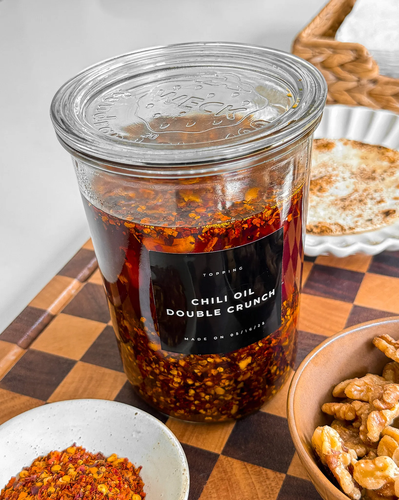

Moribyan
Lemon Ricotta Pancakes
Total Time 30 Mins Author Hajar Larbah

Ingredients
- 1 1/3 cup all purpose flour
- 3 tablespoon granulated white sugar
- 2 teaspoon baking powder
- 1/2 teaspoon baking soda
- 1/4 teaspoon salt
- 3 large eggs yolks and whites separated
- 1 cup whole milk ricotta
- 1/3 cup whole milk
- 1 tablespoon distilled white vinegar
- 1 teaspoon vanilla extract
- 1/4 cup lemon juice
- zest of 1 lemon
Directions
- In a large bowl, whisk together flour, sugar, baking powder,
baking soda, and a pinch of salt. Set aside.
- In another bowl, add egg yolks, ricotta, milk, vinegar,
vanilla extract, lemon juice, and lemon zest. Whisk until
fully incorporated and you start to see some bubbles.
Set aside.
- In a separate bowl, whisk together your egg whites just
until stiff peaks form.
- Into the bowl with dry ingredients, add your wet ingredients
and your fluffed egg whites. Completely mix together with a
rubber spatula or whisk, making sure not to overwork the batter.
Only mix until combined - no more dry flour. Your batter should
look lumpy. Let it rest for 5 to 10 minutes to
thicken more.
- Heat a non-stick pan over medium heat for a few minutes, just
until hot. Reduce the heat slightly before starting to cook the
pancakes. When you add butter or oil to the pan, if it starts
to brown, that means the pan is too hot and
should let it cool.
- Once the pan is at the right heat, spray with oil or coat in
butter and drop about 1/3 cup of batter. You could add more or
less depending on what size you want them to be. Give it about
3 to 4 minutes on the first side. Bubbles should start to form
on the top. That's when it's ready to flip. Let both sides
turn slightly golden before taking off the pan. Continue this
process until batter is out!
- Serve warm with maple syrup, powdered sugar, blueberries,
butter, or even blueberry jam.
Crispy Chicken Katsu
Total Time 30 Mins Author Hajar Larbah

Ingredients
- 1 pound boneless skinless chicken thighs (about 5 pieces)
WET BATTER
- 2 large eggs
- 1 tablespoon milk
- 1/4 teaspoon salt
- 1/4 teaspoon black pepper
- 1/4 teaspoon garlic powder
DRY COATING
- 1/2 cup all purpose flour
- 1/2 teaspoon salt
- 1/4 teaspoon black pepper
- 1/4 teaspoon garlic powder
DRY BREADING
- 2 cups Pank breadcrumbs
- 1/2 teaspoon salt
- 1/4 teaspoon black pepper
- 1/4 teaspoon garlic powder
Instructions
- Pat the chicken thighs dry with a paper towel.
- In one bowl, combine all purpose flour with salt, black pepper,
and garlic powder.
- In another bowl, whisk together the eggs also with a
splash of milk, and some more salt, black pepper, and
garlic powder.
- In a third bowl, add the Panko breadcrumbs with salt,
black pepper, and garlic powder.
- First, coat each chicken thigh in the seasoned flour,
making sure to shake off any excess.
- Dip each floured chicken in the egg mixture and let any
excess drip off. To make this process a lot less messy,
reserve one hand for just the dry and the other hand just
for the wet.
- Dip the chicken in the breadcrumbs after the egg and press
them on tightly all around. Repeat with the rest.
- Let the breaded chicken sit for 10 minutes and in the
meantime, start heating up the oil to fry.
- Once the oil is hot enough (350°F), drop the chicken in,
frying in batches so they're not overcrowded. Once golden
brown on one side, flip over and repeat with the
other side.
- Take out and transfer to a wire rack once cooked through
the center. Chop and enjoy warm!
Chili Oil Double Crunch
Total Time 15 Mins Author Hajar Larbah

Ingredients
- 2 1/2 cups vegetable oil
- 4 garlic cloves, thinly sliced
- 1 shallot, finely chopped
- 1/2 cup walnuts
- 1/2 cup red chili flakes
- 1 teaspoon salt
- 2 teaspoons granulated sugar
- 1 teaspoon white pepper
- 2 tablespoons paprika
Instructions
- Preheat your oven to 350°F. Spread the walnuts out on a
baking sheet and toast for about 8 minutes, or until golden
and fragrant. Let them cool completely, then finely chop.
Set aside for later.
- While the walnuts cool, get your heatproof glass jar ready.
In the jar, add the red chili flakes, salt, sugar, white
pepper, and paprika and stir together.
- In a small pot, heat the vegetable oil over medium heat to
350°F. Add the sliced garlic and fry until golden brown and
crispy, stirring often so it doesn’t burn. Use a slotted
spoon to transfer the garlic to a paper towel to drain.
- In the same oil, add the finely chopped shallots and fry until
deeply golden and crispy. Remove with a slotted spoon or strain
with a sieve over a heat proof bowl and set on a paper towel
to drain.
- Once the garlic and shallots are done, strain the oil
through a fine mesh sieve to catch any leftover bits. Return
the strained oil to the pot and reheat it until shimmering
and hot.
- Carefully pour the hot oil into the prepared jar over the spice
mix. It’ll sizzle immediately — that’s exactly
what you want!
- Once the chili oil has slightly cooled, about 5 minutes,
stir in the reserved fried garlic, fried shallots, and
chopped toasted walnuts.
- Let your chili oil cool completely at room temperature.
Seal the jar with a lid and store in the fridge — it’ll
last for weeks and just gets better over time.